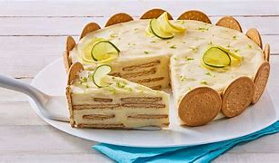

Carlota de limon facil

Ingredientes
- 6 limones
- 1 lata de leche evaporada, (360 ml)
- 1 lata de leche condensada, (397 g)
- 2 paquetes de galleta María, (170 g)
Preparacion
- Exprime los limones y reserva el jugo.
- Licúa la leche evaporada, la leche condensada y el jugo de limón hasta obtener una crema.
- En un recipiente mediano, coloca las galletas marías y agrega la mezcla anterior, busca formar capas de galletas y de la mezcla que preparaste. Rellena el molde perfectamente.
- Decora con trocitos de galleta o con rodajas de limón.
- Refrigera durante 2 horas y sirve.
Pagina de ejemplo